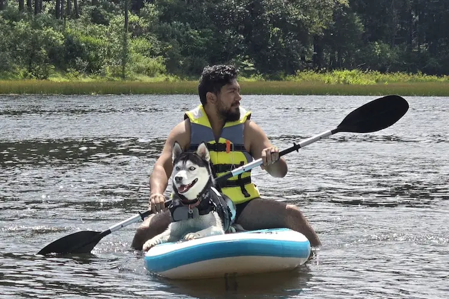

WELCOME !
Welcome to Tail Trails—your go-to destination for outdoor adventures with dogs! Hike scenic paths, bike rugged terrain, and splash into lakes together. Unleash the fun!

Welcome to Tail Trails—your go-to destination for outdoor adventures with dogs! Hike scenic paths, bike rugged terrain, and splash into lakes together. Unleash the fun!
